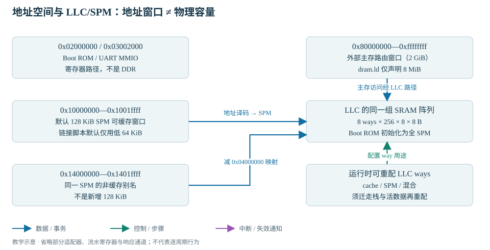
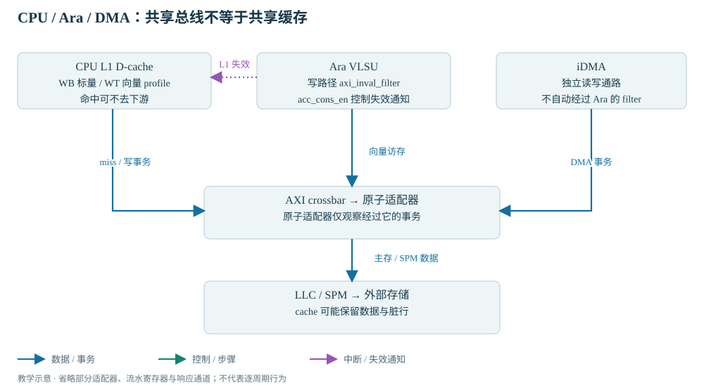

READ · TRACE · BUILD · EXPLAIN
06 · 访存、DMA 与 RVV
沿真实连接追踪数据，知道哪些路径并不自动一致。
分别追踪 CPU、Ara 和 DMA 的数据；解释 LLC/SPM 共用阵列和一致性边界；为最小 RVV 测试建立三层证据。前置：AXI 五通道、ELF/启动以及实验 1～3。
本章使用小实验解释访存与共享数据规则；寄存器操作与设备使用详见第 15 章，存储组织和硬件数据通路详见 H06。
Load/Store 访存路径
执行 x = *p 时，先由 CPU 的 load/store 单元和地址属性判断路径；启用虚拟地址翻译时还要经 MMU（Memory Management Unit，内存管理单元）/TLB（地址翻译缓存）。本课裸机不建立应用页表，不能把 Sv39 profile 的存在理解为软件已经运行于分页系统。
| 地址/情况 | 教学路径 | 观察重点 |
|---|---|---|
| 可缓存 RAM，L1 命中 | CVA6 D-cache → 寄存器 | 这次读可能没有 AXI 事务，不能只看总线就说 CPU 没执行 |
| SPM 缓存未命中或非缓存访问 | CPU AXI → xbar → 主存原子适配器/LLC 前端 → SPM 阵列 | 片上结束；不需要 DDR 芯片返回数据 |
| 0x03002000 附近 UART | CPU MMIO → xbar → AXI-to-reg → UART 的 reg/APB 适配 | 访问宽度、偏移、读副作用、外设握手 |
| 0x80000000 外部主存 | CPU AXI → xbar → 原子适配器 → LLC 路径 → axi_llc_mst 接口 → 模型/DDR | cache 模式可能命中 LLC；全 SPM 模式下外部主存请求走下游 |
地址空间与 LLC/SPM 映射

LLC（Last-Level Cache，末级缓存）阵列大小由 8 ways × 256 lines × 8 blocks × 64/8 bytes = 131072 bytes 算出，即 128 KiB。Boot ROM 初始化为全 SPM，不能同时把同一份 128 KiB 全部计为 cache 容量再加上 128 KiB SPM。以后可以按 way 重分配，但这会改变仍在运行的代码、栈和数据所在空间。
gen_cva6_cfg 的可缓存规则包含低 SPM 窗口，没有包含 +0x04000000 的别名；cheshire_soc 在 LLC 前把高别名映射回低地址。两者共享同一物理字节。用低别名写入 WB L1 后立即从高别名读取，可能看不到尚未写回的数据；高别名写后低别名也可能保留旧副本。
当前 ExecuteRegion 对 SPM 使用 2×SizeSpm，而非缓存别名与低地址相隔 64 MiB，默认执行区没有覆盖这个高别名。教材只把高别名用作数据，代码仍从低 SPM 执行。本轮不改地址图或执行属性。
MMIO 访问、定时器与中断
实验 4 使用 scratch6 做单拥有者读回，保留并恢复旧值。scratch0～5 与启动协议有关，scratch2 还承载退出信号，不可随意当测试 RAM。实验 5 只轮询 CLINT（Core-Local Interruptor，核本地中断/定时器）mtime：先读高、低、再读高，避免跨 32 位低半翻转时拼出错误 64 位时间。
mtime 是 RTC 时间基准，mcycle 是 CPU 周期；TB 默认 RTC 32768 Hz，FPGA wrapper 报告的 RTC 是 1 MHz，二者不能共用硬编码延时。CPU 时钟的仿真周期与主机运行速度又是两回事。
升级到中断的顺序是：准备正确的 trap handler 与上下文保存 → 设置未来的 mtimecmp → 确认清/重设中断源的方法 → 打开 mie.MTIE 和 mstatus.MIE → 等待 → handler 识别中断并重设比较值 → mret。外部设备通常还经 PLIC（Platform-Level Interrupt Controller，平台级中断控制器）的 enable/priority/claim/complete。CLIC 是另一可选局部中断配置，不与默认流程混用。
当前 clint_sleep_until 在 mtime<目标时直接 return，与睡到未来时刻的意图相反；clint_get_mtime 也没有高低高重读。教材用独立 polling 示例说明可靠读法，不修改旧驱动。实际中断实验需由 S01/V01 接手 handler 与唤醒语义，不能把 wfi 当作自动延时函数。
CPU、Ara 与 DMA 的一致性边界

缓存一致性（cache coherence）关注同一地址多个副本怎样保持可见；内存排序（memory ordering）关注不同访问的先后；原子性（atomicity）关注操作能否被并发访问打断。三者相关，但不能用一个词代替另外两个。
当前 Ara 写路径经过 i_ara_axi_inval_filter，借 acc_cons_en / inval_* 向 CVA6 L1D 发失效。csr_regfile 中 acc_cons_q 的复位值取决于 EnableAccelerator。这个具体机制不是通用的 AXI snoop（侦听）协议，iDMA 不自动穿过同一个过滤器；CPU 写缓冲、L1 类型、Ara load/store 完成顺序与 LLC 状态仍要在匹配组合上验证。
| 操作或机制 | 作用范围 | 未覆盖的约束 |
|---|---|---|
| volatile 指针 | 约束编译器对可观察访问的处理 | L1/LLC 中的数据副本、DMA 完成、设备可见性 |
| fence + 编译器 memory clobber | 指令/编译器层面的访问排序 | 不自动执行所有级别的 cache clean / invalidate |
| CPU L1 为 WT | 写向下传播的缓存策略 | 读行可能过期，写缓冲有时序，LLC 仍可能持有脏行 |
| 设备绕过 LLC | 该设备不分配/替换 LLC 行 | CPU/Ara 缓存副本与 DDR 的同步、DDR 争用、上游 LR/SC 观察 |
| 收到设备中断 | 设备报告了一个事件 | 除非契约明确，不能代替数据可见性与 CPU 侧同步 |
未来最保守的共享协议：CPU/设备分阶段拥有缓冲区，全部相关访问使用已验证的非缓存区域，按 MMIO/中断交接。若保留缓存，则必须拥有可用且已验证的分级维护方法：CPU 产出先 clean/排空和排序，再 doorbell；设备产出完成写响应与可见性契约后通知，CPU 做必要 invalidate/排序再读。本文没有把任何具体地址冻结为未来 DDR 共享区。
DMA 缓冲区布局与搬运验证
教材 DMA/RVV 阶段在当前单核、全 128 KiB SPM前提下，仅为本次实验保留物理 [0x10010000,0x10011000) 的 4 KiB 区间。程序链接低 64 KiB；Boot ROM 栈在高端。三个缓冲区从高别名 0x14010000、0x14010400、0x14010800 访问，各使用 548 字节。
这些地址是独立示例的实验预约，不是修改生产地址图，也不是未来 DMA 内存方案。它要求没有其他 hart/程序使用该区，栈始终高于 0x10011000，不重新分配 LLC ways；默认链接器不检查运行时栈碰撞。应用读 LLC_SIZE 必须等于 131072 才继续。若容量/栈策略不同，停止本实验而非照抄地址。
关键是从未用低别名触碰这三个共享缓冲，也不让 crt0 的 BSS 清零覆盖它们。这样避免 WB 旧脏行覆盖 DMA 结果。CPU 通过高别名初始化 a/b/c → fence → 写 DMA 配置并读取 next-id 触发 → 有界轮询 done-id → fence → 用同一高别名逐元素验证。它验证当前 SPM 数据通路，不证明 DDR 共享一致性。
RVV 执行与计算结果验证
本课用整数相加 c[i]=a[i]+b[i]：a=i，b=2i+1，因此每个期望值 3i+1。N=137 刻意不是常见向量容量整数倍。vsetvli 根据剩余元素数设置本轮 vl；SEW（Selected Element Width，元素宽度）为 32，LMUL（寄存器组倍数）为 1。Ara VLEN=2048 时 VLMAX=64，但当 AVL 处于 VLMAX 与 2×VLMAX 之间时，不应要求唯一的分块序列；循环始终按实际返回的 vl 前进。
vsetvli t0, a3, e32, m1, ta, ma # t0 = 本轮实际元素数
vle32.v v0, (a0) # 装 a 的一段
vle32.v v1, (a1) # 装 b 的一段
vadd.vv v2, v0, v1 # 向量整数加
vse32.v v2, (a2) # 保存结果
sub a3, a3, t0 # 剩余元素减少 vl
slli t1, t0, 2 # 地址前进 vl × 4 字节ta/ma 表示尾部/掩码非活动元素可不保留，程序只校验本轮有效元素。完整循环见 rvv_add.S。VS 必须在第一条向量指令前非 Off；本例没有向量浮点，原 crt0 已初始化 FS。规范语义参考 RISC-V V 扩展官方资料；实际硬件实现需用此本地版本验收。
- 静态指令证据：反汇编 learn_vadd 中有 vsetvli、vle32.v、vadd.vv、vse32.v。本轮已完成。
- 执行证据：仿真中 PC/退休记录确实走到这些地址，Ara 指令握手/访存活动与之对应，无非法指令 trap。本轮未执行；波形名称由实际展开层次选取，不虚构信号路径。
- 计算证据：137 个结果逐元素对比独立公式，UART RVV checked=137/errors=0 与返回 0 一致；错误注入时必须失败。本轮未执行。
访存与向量计算练习
完成 实验 4～7，再手算 137 个元素的总和 28085。成功判据是“能解释地址路径 + 有计算校验 + 错误能失败”，不是只找到几条 v 开头指令。若 RVV 挂住，先查配置/VS/首条向量指令 PC，再看访存响应和一致性；不先扩大矩阵规模。
1. 非缓存别名访问避开 LLC 阵列了吗？
没有。当前 SPM 别名只是避开 CPU L1 的缓存分配，并在 LLC 前映射到同一 SPM 存储；它仍依赖 LLC 的阵列和初始化。
2. 设备不发 AMO，旁路写就不影响 CPU LR/SC 吗？
不成立。普通写也可能改变 CPU reservation 相关位置；上游监视器看不到旁路写时，共享原子语义需要另外设计。
3. 为什么不用已有 4×4 fmatmul 的 SUCCESS 直接证明向量结果正确？
其 main 最终 return 0，校验失败没有汇入返回值。还需检查真实执行了哪个函数、逐元素结果和失败传播。